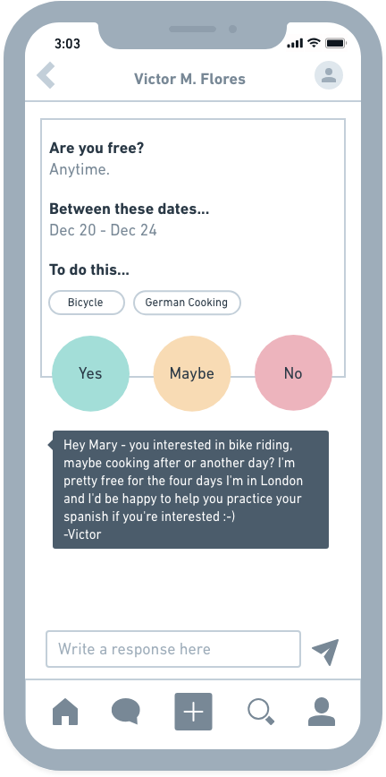
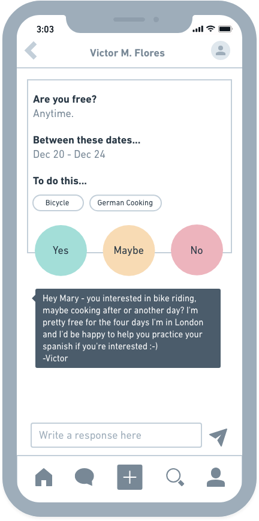

The first round of user testing was performed in wireframes, and shed a blaring light on the deficiencies of the prototype so far. Here were some of the findings:
(1)The use cases of the plus button and upload button was confusing to users. Below, you can see the user goals of "create new" "upload" and "go to social media" were split up into three clearly labeled buttons.
(2)Users were unsure about the functions of the menu bar above. Below, you see the menu bar was scrapped, and a dropdown menu was created for each item, to make it apparent you are manipulating that specific document.
(3)Users thought the two separate upload buttons had totally separate functionalities. In the iteration below, you can see the upload button is now spelled out, and the drag and drop icon was spelled out as well to clarify the functionality to the user.
(4)Users were very unsure how to create new files and organize their content. In the iteration below, new organizational side navigation panel was created to make it clear to users it was for organizational use.
(5)A major critique of this iteration was the lack of effective use of space. By having this feed bar to the right, users are now able to keep up to date with their feed without switching screens, optimizing efficiency, and promoting constant interactions with all features of FileWeave. I also increased the number of documents on the screen, and decreased the width of the nav to make the dashboard more breathable.
The second round of user testing feedback resulted in the following: (1)The logo blended into the background, this prompted a color palette change, and a logo redesign seen below in user testing results.
(2)The dropdown menu was still being overlooked, so the individual document functions were spelled out on the individual file.
(3)Users were confused about how FileWeave facilitated advanced organization. Here three different screen views were created, where you can upload files directly to these different realms of your life, to avoid having to organize different files, these overarching umbrella files called "baskets" offer painless organization at your fingertips.
(4)Yet again, users found it confusing that there were two upload buttons, so the button itself was eliminated, and the folder upload icon was created to clearly differentiate and identify the use.


 
